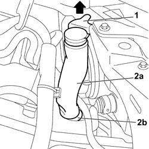

5050A12 PIPE IN ENGINE BAY FOR CARRYING LIQUID TO WINDSCREEN WASHER RESEVIOR R R
- Path
- Procedures > 50 AUXILIARY UNITS > 5050 SCREEN WASHERS AND HEADLAMP WASH/WIPE > 5050A WINDSCREEN AND HEADLAMP WASHER RESERVOIR > 5050A12 PIPE IN ENGINE BAY FOR CARRYING LIQUID TO WINDSCREEN WASHER RESEVIOR R R
- Kind
- repair procedure (removal / refitting; the operation number is the code)
- Applies to
- all engines; all production periods
- Interactive page
- https://sloeber94.github.io/elrnDB-fCrm/en/#/194000644
Applies to: all engines; all production periods
 Removing
Removing
 Refitting
Refitting1. Working via the engine compartment, release the clip securing the pipe to the crossmember.
2. Exerting moderate force upwards, release the windscreen washer reservoir filler pipe (2a) from the housing (2b) on the reservoir.

Applies to: all engines; all production periods
Refitting
Removing- Check that the pipe is not damaged.
- Position the pipe on the windscreen washer fluid reservoir and, pressing carefully, fit it correctly in its housing.
- Then fit the clip securing the pipe to the crossmember